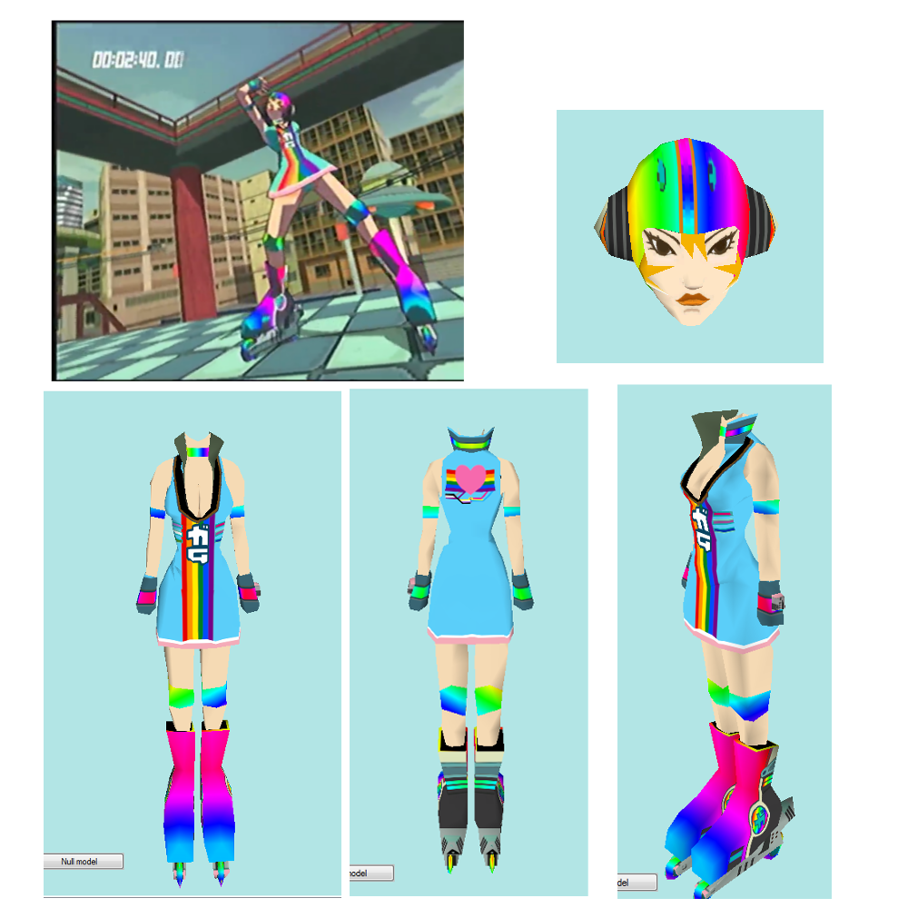

ecn World Wide
Blog and Forum


- News Flash -
Rainbow Gum JSRF texture edit for Pide Month 2019 available for download!
Blog Post
Download
Forum Post
- Also -
Yahoo Remix Requests are Open!
Forum Post
- Also -
Solidarity to the gilets jaunes protestors in France!
General Strike to Save the Planet
Capitalism is killing the planet. It's model of "unlimited growth" and usage of cheap hydrocarbon energy, in a world with limited resources, has led to an out of control spiral of destruction the world has come to know as "global warming". Pollution that negatively effects everyone does not necessarily negatively effect the profits of the individual corporation, and thus under capitalisms “efficient competition”, is treated as an "external cost". The one paying this cost is us, the people, while the capitalists responsible have the money to avoid many of the negative consequences of having their homes flooded or their drinking water poisoned. It is clear that neither the capitalist class, nor the politicians they fund, are capable of preventing or even substantially slowing down the impending environmental crisis that they created. Thus, the people themselves must prevent it through direct action, or die from the capitalists' negligence. The time to act was 10, 20, 30 years ago, and the time to act is now! The General Strike to Save the Planet is being organized now, kicking off its first phase and strike on January 15, 2019. We must bring the system to a halt in order for our demands of a livable Earth to be met. Join the Discord! Print Fliers! Spread the News! Organize your communities and workplaces! At least put your name down, even if it's not your real name. And finally, strike when the time comes. We only have this planet, and it is dying under the mismanagement of capitalism. We will die with it. We must reorganize the global system to fit humanity's collective interest, and we must do it soon.
Earth Strike Website
Earth Strike Discord
Earth Strike Twitter
This post will remain at the top of Wecn World Wide throughout the duration of the strike, with updates apended as neccisary.
- November 14, 2018 -
Discuss on the Forum
Return to Top
Rainbow Gum for Pride Month 2019

I decided to do something for pride for the first time ever, blah, blah, blah, here we now have Rainbow Pride Gum.
- Pros -
• Stylish outfit
• gay
• Show solidarity to our LGBTQ+ Comrades
• Hacking is fun
- Cons -
• Requires a softmodded Xbox or Emulator
• May be too powerful: caution advised
• Amateur work and it shows
• Bottom text to keep the html symmetrical
This, of course, was made using gimp, the base game texture file, some wikipedia images, and the JSRF texture editing tool made by Neodos (Here's their blog).
The texture is downloadable here at this crappy website, or over at github. It includes the modded gum.dat file, as well as the design files and a readme.
- Bonus: -
At first I was going for a more "traditional" dress.
Needless to say, it didn't work out. Hideki did not design the character's texture mapping with the capability of maximum gay in mind T_T
- June 9, 2019 -
Discuss on the Forum
Return to Top
In other News...

Around late August 2015, a rando named wecn who had been lurking in various speedrunning streams posted their own speedrun of Ed, Edd, n’ Eddy the Mis-Edventures, and shortly thereafter Jet Set Radio Future. Wecn became know in the community as “that communist weirdo who forces memes”, which was a fair title. By February 2016 wecn’s participation declined, and despite attempting a few revivals, wecn had decided to go on hiatus.
However, that was not enough for wecn. For various personal reasons, they decided that it would be best to leave the whole wecn thing behind and deleted most of the things associated with wecn, including videos, accounts, media, etc. After making two extra cameos, first to very very poorly describe their reasoning commemorating the “””election””” of Donald “shouldn’t exist” Trump, and second to commemorate the train-wreck SGDQ 2017 Speedrun. Since then, there has been silence.
Until now, with the relaunch of the wecn website (formerly wecn.tk, don’t use .tk: they are scammers. source:me), now called Wecn World Wide. I have come a realization and have decided that my personal opinions do not matter: preventing the impending destruction of the Earth at the hands of the capitalists matters far, far more. There is almost no point in being a communist unless you are out there spreading the word and agitating. I am not in a position to actually be out there - on the streets – and I don’t think I could do a very good job of it. This is a failing of many leftists – Internet slacktivism. However, after years of silently watching and seeing, time after time, the increasing atrocities committed by the capitalist class, the increasing rise of fascism, and the impending destruction of the world, I can no longer sit by and do nothing. Here, behind the screen, keyboard, and W face of wecn, I can at least do something. It is not much, and the those whoa re actually fighting for their lives across the world - in Syria, Rojava, and in the gutters of every “”First world”” country – they deserve respect and a better life they’ve been handed by the capitalist class. Their struggle will be everyone's soon enough if the capitalist class is not stopped. JP Morgan, the big bank itself, predicts the next capitalist economic crisis for 2020 [1], and with the environmental disaster looming on the horizon, the current status quo, as bad as it already is, will break down soon enough, and when it does it won’t be the rich paying the price. To not act is to support this status quo, and thus I have taken a step away from inaction.
This return is well timed with the beginning of the Earth Strike movement, which began less than a week ago. The class struggle and the environmental struggle are one and the same, and thus, I have joined the struggle under a different name, in hopes of supporting and being a small part of what will hopefully accomplish the greatest goal of all – saving the planet. I greatly urge anyone else even remotely interested in having a planet to live on to support this movement in whatever way they can. Talking about it helps tremendously: talking means others will learn about it, feel more confident in joining because others are, and if the movement seems large enough, larger unions and organizations will throw their support behind it, actually allowing the strike to damage the capitalist class and force them into not voluntarily killing the planet. The movement itself is, of course, what the media would call “grass-roots” (although I wouldn’t be surprised if they didn’t describe it as such). It’s being organized on discord, while certainly not my first choice, it is where the people are, and I very much hope and believe that the movement won’t be co-opted by some larger liberal organization like the “green” party, who will make concessions and disarm the movement.
That said, this so-called return has been planned / has been in limbo for a couple of months, as can be seen by the age of some of my initial forum posts. The reason I began planning resurrecting the wecn site has to do with lost media. Capitalists are horrendous stewards of culture: entire websites filled with user-made content are axed when they become unprofitable, various forms of media are lost to time as they are kept behind copyright walls long after they cease being profitable. If it weren’t for emulation, many historical and influential games would be unplayable to the vast majority. I will go ahead and sponsor another organization: archive team, which is dedicated to preserving culturally important data that the capitalists have deemed useless. Of course, I realize, this makes me a perpetrator of cultural destruction, by deleting my work from the Internet. Of course, I obviously am not culturally significant, however it was a needless action that erased things that other people had experienced, even if only a few. That is why I’ve been planning on making and releasing the Wecn Lost Media Pack: Global Revolution Edition, including everything I have left over from the wecn Era (It’s not much sadly – always keep local backups of your stuff), as well was behind-the-scenes memes, images, production files, etc. I doubt many would care, but it’s what I want out of the Capitalists. In addition, I plan to make new content just because. Information about that, as well as the specifications of the site, plans, etc will come in following posts soon.
- November 15, 2018 -
Discuss on the Forum
Return to Top